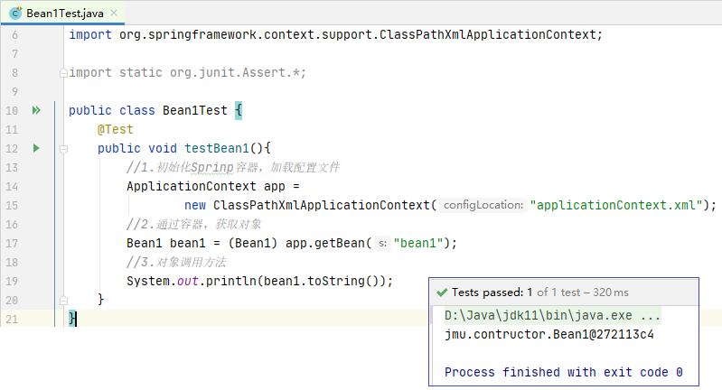
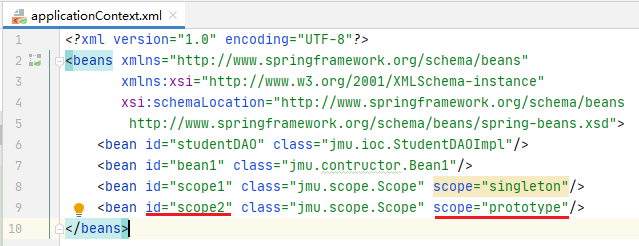

Spring是当前主流的Java Web开发框架，是一种轻量级开源框架，它以IoC（Inversion of Control反转控制）和AOP（Aspect Oriented Programming面向切面编程）为内核， 使用基本的JavaBean来完成以前只能由EJB完成的工作，取代了EJB的臃肿、低效的开发模式。
注意：这里我们只是了解Spring的目录结构，不需要下载，下载的任务交给Maven。
Spring的第一个版本是在2004年发布的，目前使用5.3.6版本， 名称为：spring-5.3.6.RELEASE-dist.zip， 下载URL为：“ https://repo.spring.io/simple/libs-release-local/org/springframework/spring/”。 下载后，将压缩包解压到自定义的文件夹中，解压后的目录结构如图所示。
Spring开发时需要用的基本JAR包：
☆spring-core-5.3.6.jar:包含Spring框架基本的核心工具类
☆spring-beans-5.3.6.jar:包含访问配置文件、创建和管理Bean以及IoC操作相关类
☆spring-context-5.3.6.jar:提供了在基础IoC功能上的扩展服务，如邮件服务、远程访问、缓存
☆spring-expression-5.3.6.jar:定义了Spring的表达式语言
(1) 在IntelliJ IDEA中，创建一个名为spring01的maven项目， 注意不要选择模板。
(2) 修改pom.xml文件，从提供的模板 sprint-pom.txt 中复制粘贴，导入Spring依赖的jar包，首次导入速度比较慢。
(3)在目录src/main/resources下， 创建Spring的配置文件applicationContext.xml， 可从提供的模板applicationContext.xml 直接copy。
Tips：配置文件的模板可以在spring框架的解压文件夹中的doc目录，在spring-framework-reference文件夹下打开html文件夹，找到Core.html文件下的1.2.2小节中的Configuration metadata中找到配置文件的约束信息。初学者只需复制到项目的配置文件中使用即可。
(4)在目录src/main/java下， 创建包jmu.ioc，并在包中创建接口StudentDAO。
(5)在包jmu.ioc下创建接口实现类StudentDAOImpl ，实现接口中的say()方法。
(6)在路径src/main/resources下打开Spring配置文件 applicationContext.xml，注册bean。
(7)编写测试程序，打开StudentDAOImpl.java文件， 选择“StudentDAOImpl”文字，按快捷键“Alt+Enter”，在弹出的选项中选择“Create Test”。 会自动在路径src/test/java/jmu/ioc下创建测试文件 StudentDAOImplTest.java。
运行效果如下图所示。
如果运行时报错：Error : java 不支持发行版本5,可以参考 https://blog.csdn.net/qq_22076345/article/details/82392236 网页解决。
依赖注入(Dependency Injection DI)与反转控制(IoC Inversion of Control)含义相同，不同角度描述而已。
某个Java对象（调用者）需要调用另一个Java对象（被调用者，即被依赖对象）
传统模式：调用者采用“new 被调用者”方式创建，强耦合
Spring框架：
☆对象的实例不再由调用者创建，而是由Spring容器创建。控制权由应用代码转移到Spring容器，控制权发生了反转。
☆Spring容器负责将被依赖对象赋值给调用者的成员变量，相当于为调用者注入了它依赖的实例。
☆属性setter方法注入：通过调用无参数构造器或无参静态工厂方法实例化Bean后，调用该Bean的setter方法，即可实现setter方法的依赖注入。
☆构造方法注入：指IoC容器使用构造方法注入被依赖的实例。基于构造方法的依赖注入通过调用带参数的构造方法来实现，每个参数代表着一个依赖。
Spring可以被看作一个大型工厂，这个工厂的作用就是生产和管理Spring容器中的Bean。
2.1 Bean的配置
2.2 Bean的实例化
2.3 Bean的作用域
2.4 Bean的装配方式
在Spring中，XML配置文件的根元素是<beans>，<beans>中包含多个<bean>子元素，每一个<bean>子元素定义了一个Bean，并描述了该Bean和被装配到Spring容器中。
| 属性/子元素名称 | 描述 |
| id | Bean的唯一标识符 |
| name | name属性可以为Bean指定多个名称，每个名称之间用逗号或分号隔开 |
| class | 指定了该Bean的具体实现类，必须是一个完整的类名 |
| scope | 设定Bean实例的作用域，有：singleton(单例-默认值)、prototype(原型)、request、session、globalSession、application、websocket。 |
| constructor-arg | 可用此元素传入构造参数进行实例化。该元素的index属性指定构造参数的序号(从0开始)，type属性指定构造参数的类型，参数值可以通过ref属性或value属性直接指定，也可以通过ref或value子元素指定 |
| property | 用于调用Bean实例中的setter方法完成属性赋值，从而完成依赖注入。该元素的name属性指定Bean实例中的相应属性名，ref属性或value属性用于指定参数值 |
| ref | <property>、<constructor-arg>元素的属性或子元素，可以是Bean工厂中某个Bean实例的引用 |
| value | <property>、<constructor-arg>元素的属性或子元素，可以直接指定一个常量值 |
| list | 用于封装List或数组类型的依赖注入 |
| set | 用于封装Set类型属性的依赖注入 |
| map | 用于封装Map类型属性的依赖注入 |
| entry | <map>元素的子元素，用于设置一个键值对，其key属性为键，ref或value为值 |
在配置文件中，通常一个普通的Bean只需要定义id（或name）和class两个属性即可。

在Spring中，要想使用容器中的Bean，需要实例化。实例化Bean有三种方式：
A.构造器实例化（最常用）
B.静态工厂实例化（有兴趣自学）
C.实例工厂方式实例化（有兴趣自学）
构造器实例化指Spring容器通过Bean对应类中默认的无参数方法来实例化Bean。
例：构造器实例化
(1)在spring01的Web项目下路径src/main/java下 创建一个jmu.constructor包， 在该包中创建Bean1类。
(2)在applicationContext.xml中， 在配置文件中定义一个id为bean1的Bean， 并通过class属性指定其对应的实现类为Bean1。
(3)创建测试类Bean1Test， 来测试构造器能否实例化Bean。

Spring容器为Bean的实例定义了7种作用域。
| 作用域 | 说明 |
| singleton单例☆ | 在Spring容器中将只有一个实例，无论有多少个Bean引用它，始终将指向同一个对象，默认 |
| prototype原型☆ | 每次通过Spring容器获取的prototype定义的Bean时，容器都将创建一个新的Bean实例 |
| request | 在一次HTTP请求中，容器会返回该Bean的同一个实例，且仅在当前HTTP Request内有效 |
| session | 在一次HTTP Session中，容器会返回该Bean的同一个实例，且仅在当前HTTP Session内有效 |
| globalSession | 在一个全局的HTTP Session中，容器会返回该Bean的同一个实例，且仅在使用portlet上下文时有效 |
| application | 为每个ServletContext对象创建一个实例，仅在Web相关的ApplicationContext中生效 |
| websocket | 为每个websocket对象创建一个实例，仅在Web相关的ApplicationContext中生效 |
Bean的作用域为singleton时，Spring容器就只会存在一个共享的Bean实例，并且所有对Bean的请求，只要id与该Bean的id属性相匹配，就会返回同一个Bean实例。是Spring容器的默认作用域。
例：singleton作用域
(1)在spring01的Web项目下路径src/main/java下 创建一个jmu.scope包， 在该包中创建Scope类。
(2)在applicationContext.xml中， 在配置文件中定义一个id为scope1的Bean， 并通过class属性指定其对应的实现类为Scope。
(3)创建测试类ScopeTest， 来测试singleton的作用域。
对需要保持会话状态的Bean应该使用prototype作用域，Spring容器会为每一个对该Bean的请求都创建一个新的实例。
例：prototype作用域
(1)在applicationContext.xml中， 在配置文件中再定义一个id为scope2的Bean， 并通过class属性指定其对应的实现类为Scope。

(2)在测试类ScopeTest 中添加测试方法scopeTest2()来测试prototype的作用域。
Spring提供了多种形式的Bean装配方式：
A.基于XML的装配
B.基于注解(Annotation)的装配（最常用）
C.自动装配
（实际项目中很少用）
在Spring实例化Bean的过程中，Spring首先会调用Bean的默认构造方法来实例化Bean对象，然后通过反射的方式调用setter方法来注入属性值。因此，设值注入要求一个Bean必须满足以下两点要求：
①Bean类必须提供一个默认的无参构造方法；
②Bean类必须为需要注入的属性提供对应的setter方法。
例：基于XML的装配方式
(1)在spring01的Web项目下路径src/main/java下 创建一个jmu.assemble包， 在该包中创建Student类。
(2)在applicationContext.xml中， 在配置文件中定义一个id为stu1和stu2 的两个Bean，通过XML来装配Bean。
(3)创建测试类StudentTest， 来测试XML装配方法。
传统Spring使用XML文件来对bean进行注入，存在两个缺点：
(1)如果应用中有很多Bean时，会导致XML配置文件过于臃肿，给后续的维护和升级工作带来一定的困难。
(2)开发中不断在.java和.xml中切换，思维上的不连贯会降低开发的效率
为此，Spring提供了对Annotation（注解）技术的全面支持。
| Annotation | 说明 |
| @Component | 仅表示一个组件(Bean)，可以作用在任何层次 |
| @Repository☆ | 用于数据访问层(DAO)的类标识为Spring中的Bean |
| @Service☆ | 用于业务层(Service)的类标识为Spring中的Bean |
| @Controller☆ | 用于控制层(Controller)的类标识为Spring中的Bean |
| @Autowired | 用于对Bean的属性变量、属性的setter方法及构造方法进行标注，配合对应的注解器完成Bean的自动配置工作 |
| @Resource | 作用与@Autowired一样，区别：@Autowired按照Bean类型装配，@Resource按照Bean实例名称进行装配 |
| @Qualifier | 与@Autowired注解配合使用，会将默认的按Bean类型装配修改为按Bean实例名称装配，Bean的实例名称由@Qualifier注解的参数指定 |
注意：Spring4.0以上版本使用注解方式，需要用到Spring AOP的JAR包spring-aop-5.*.*.RELEASE.jar，否则运行时会报出“java.lang.NoClassDefFound Error:org/springframework/aop/TargetSource”的错误。
例：基于Annotation的装配方式
(1)在spring01的Web项目下路径src/main/java下 创建一个jmu.annotation包， 在该包中创建BookDAO接口，并在接口中定义一个save()方法。
在jmu.annotation包中创建接口实现类 BookDAOImpl， 加上注解@Repository("bookDAO")。
(2)在jmu.annotation中， 创建接口BookService,在接口中同样定义一个save()方法。
在jmu.annotation中， 创建接口BookService的实现类 BooktServiceImpl。
(3)创建控制器类BookController。
(4)在src/main/resources下新创建 一个配置文件applicationContext2.xml。 可以从模板applicationContext-aop.xml中复制粘贴。
在applicationContext2.xml中加上注解扫描包，通知Spring扫描指定包下所有的Bean，进行注解解析。
(5)创建测试类BookControllerTest， 来测试注解方法。
缺点：
(1)只能一次装配所有属性，若只希望装配个别属性时，不行。
(2)autowire要么根据类型自动装配，要么根据名称自动装配，不能两者兼而有之。
(3)一般情况下，在实际的项目中很少使用自动装配功能，因为和自动装配功能所带来的好处相比，明确清晰地配置更有说服力。
(1)在spring01的Web项目下路径src/main/java下 创建一个jmu.cal包， 在该包中创建CalDAO接口，并在接口中定义加减乘除方法。
(2)在jmu.cal包中 创建CalDAO接口的实现类CalDAOImpl实现加减乘除方法。
(3)在配置文件 applicationContext2.xml中加入 jmu.cal的扫描包。
(4)创建测试类CalDAOImplTest。
☆代码混乱：越来越多的非业务需求(日志和验证等)加入后, 原有的业务方法急剧膨胀. 每个方法在处理核心逻辑的同时还必须兼顾其他多个关注点。
☆代码分散: 以日志需求为例, 只是为了满足这个单一需求,
就不得不在多个模块（方法）里多次重复相同的日志代码. 如果日志需求发生变化, 必须修改所有模块。
AOP(Aspect-Oriented Programming, 面向切面编程): 是一种新的方法论, 是对传统 OOP(Object-Oriented Programming, 面向对象编程) 的补充。
AOP 的主要编程对象是切面(aspect), 而切面模块化横切关注点。
在应用 AOP 编程时, 仍然需要定义公共功能, 但可以明确的定义这个功能在哪里, 以什么方式应用, 并且不必修改受影响的类. 这样一来横切关注点就被模块化到特殊的对象(切面)里。
AOP的好处:
☆每个事物逻辑位于一个位置, 代码不分散, 便于维护和升级。
☆业务模块更简洁, 只包含核心业务代码。
☆切面(Aspect): 横切关注点(跨越应用程序多个模块的功能)被模块化的特殊对象。
☆通知(Advice): 切面必须要完成的工作。
☆目标(Target): 被通知的对象。
☆代理(Proxy): 向目标对象应用通知之后创建的对象。
☆连接点（Joinpoint）：程序执行的某个特定位置——物理意义上的概念。
☆切点（pointcut）：每个类都拥有多个连接点--逻辑意义上的概念。
| 注解名称 | 说明 |
| @Aspect | 定义一个切面 |
| @Pointcut | 定义切入点的表达式。还需要定义一个返回值为void，方法体为空的方法 |
| @Before | 用于定义前置通知，通常需要指定一个value属性值（切入点） |
| @After | 用于定义最终final通知，不管是否异常，该通知都会执行，通常需要指定一个value属性值（切入点） |
| @AfterReturning | 用于定义后置通知，通常需要指定一个value属性值（切入点） ，一个returning属性值（方法返回值） |
| @Around | 用于定义环绕通知，通常需要指定一个value属性值（切入点） |
| @AfterThrowing | 用于定义异常通知，通常需要指定一个value属性值（切入点） ，一个throwing属性值（方法抛出的异常） |
例：将验证参数、前置日志、 后置日志“织入”四则运算中。
(1)在spring01的Web项目下路径src/main/java下 创建一个jmu.calaop包， 在该包中同样创建CalDAO2接口，并在接口中定义加减乘除方法。
(2)在jmu.calaop包中 创建CalDAO2接口的实现类CalDAO2Impl 实现加减乘除的核心方法。
(3)在jmu.calaop包中 创建日志切面类LoggingAspect。
A.切面首先是一个IoC中的Bean，即加入 @Component;
B.加入切面注解, @Aspect;
C.在类中声明各种通知（声明一个方法，在方法前加 @Before或@After 或@AfterReturning 或@Around 或@AfterThrowing注解。
可以在通知方法中声明一个类型为JoinPoint(org.aspectj.lang.JoinPoint) 而非 org.aopalliance.intercept 参数，即可访问连接点的细节，如方法名和参数值。
(4)在jmu.calaop包中 创建验证切面类ValidateAspect， 把横切关注点验证参数的代码抽象到该类中。
(5)在配置文件
applicationContext2.xml中加入
jmu.calaop的扫描包;
基于注解方式的配置<aop:aspectj-autoproxy/>
(6)创建测试类CalDAO2ImplTest。